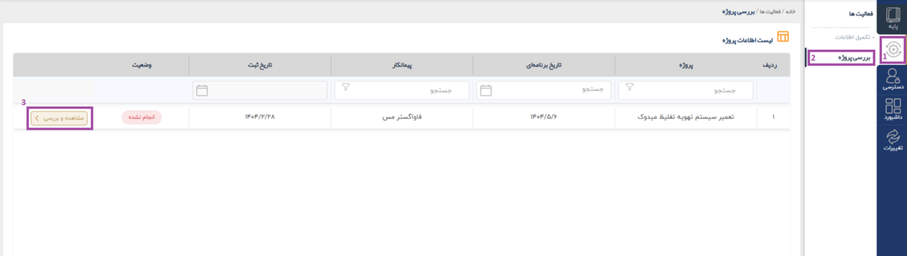
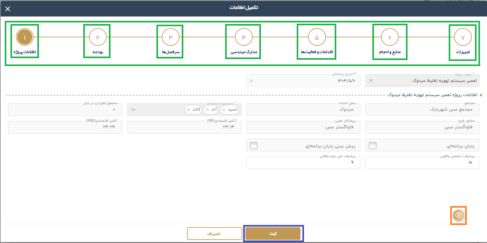
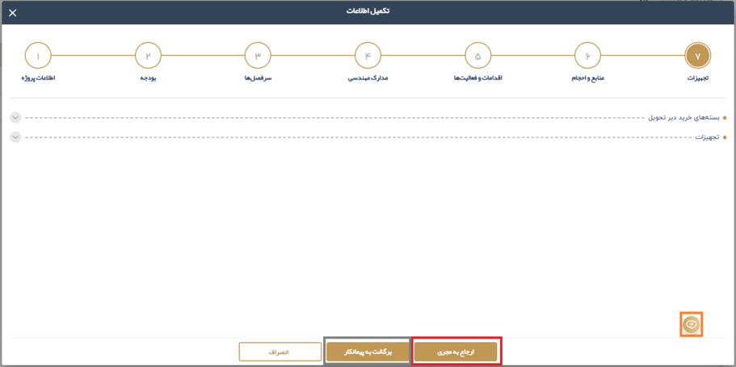

2.2.1. بررسي درخواست توسط نماينده مشاور
در این مرحله، درخواست نماینده محترم پیمانکار به بخش بررسی پروژه نماینده محترم مشاور منتقل میشود و قابل بررسی است.

اطلاعات وارد شده را بررسی و با کلیک روی دکمه ثبت به صفحه بعدی منتقل خواهید شد همچنین با کلیک به شماره های بخش های مختلف میتوانید در صفحات مختلف جا به جا شوید.

در صورتی که از نظر ایشان مشکلی در اطلاعات وجود نداشته باشد، درخواست تایید (ارجاع به مجری) و به مرحله بعدی ارجاع داده میشود. اما اگر مشکلی در اطلاعات مشاهده گردد، امکان ارجاع درخواست به مرحله قبلی ( برگشت به پیمانکار) جهت اصلاح وجود دارد.

همچنین، ابزار نوشتاری (توضیحات) برای ارائه توضیحات بیشتر برای دریافت کننده درخواست در مرحله ارسالی در این بخش در نظر گرفته شده است.